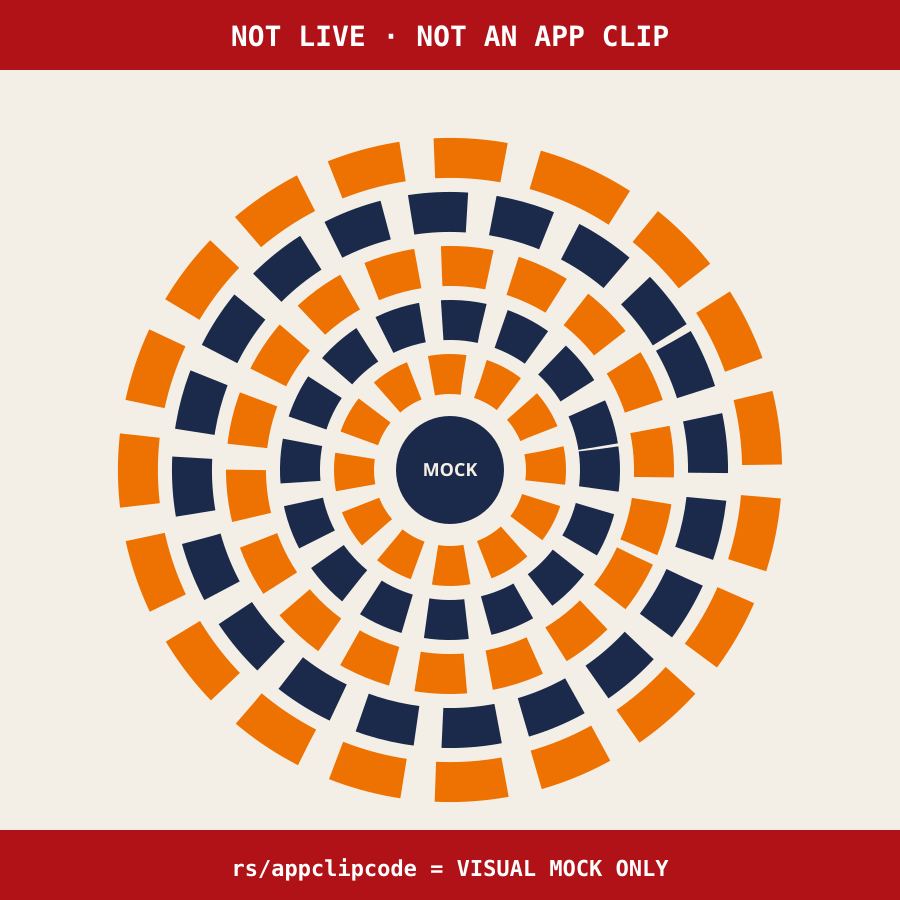

NOT LIVE · NOT AN APP CLIP · NO CAMERA CARD
OPTION 4 · PREVIEW · NOT LIVE
True App Clip — skipped overnight
No live App Clip shipped. This card is a feasibility note plus a decorative 5-ring mock. The mock is not an Apple App Clip Code, not a standard QR, and not a send file.

Optional geometry study only. No Apple logo, no , no wordmark.
Why live ship was skipped
- Needs an Apple Developer Program app + App Clip target in Xcode.
- Needs Associated Domains +
apple-app-site-association on a domain Apple will invoke.
- Needs Apple’s App Clip Code Generator (or App Store Connect advanced experience) for a real code.
- Pages URL + query is unlikely to survive App Clip URL compression (16-byte budget).
rs/appclipcode can draw a fingerprint SVG if a URL compresses — that is a visual mock only. It is not a generic QR and must not be claimed as Android+iPhone decode.- Overnight cannot mint certificates, AASA, or an App Clip invocation.
What a later live lane would need
- iOS app (or existing TAS app) with App Clip target < 15 MB.
- Invocation URL registered as an advanced App Clip experience.
- Apple-generated PNG/SVG (not a handmade ring).
- Fallback STANDARD QR beside it for Android (this repo already has OPTION 2 for that).
- NFC mock later — not this overnight.
Full write-up: OPTION_4_PREVIEW_NOT_LIVE.md · All options